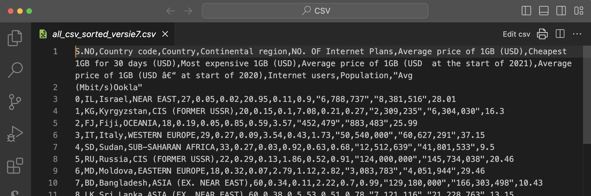
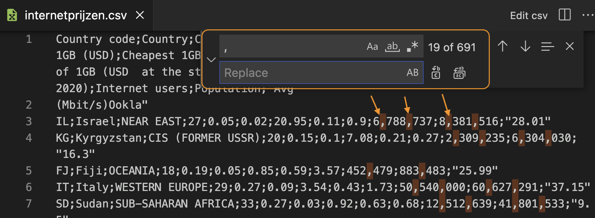
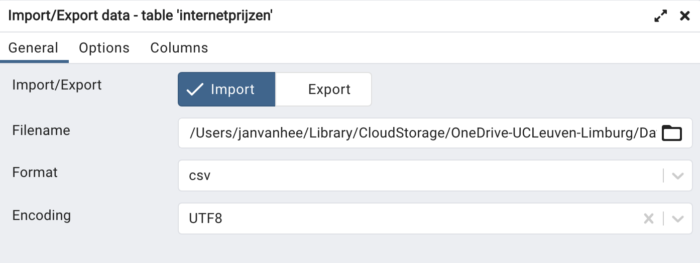
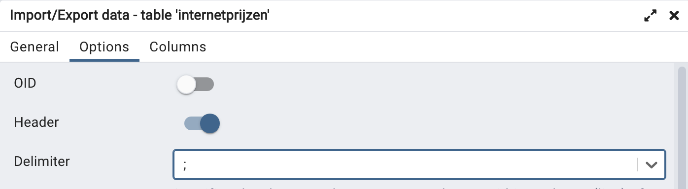
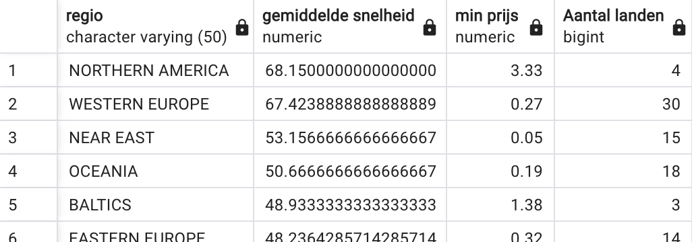
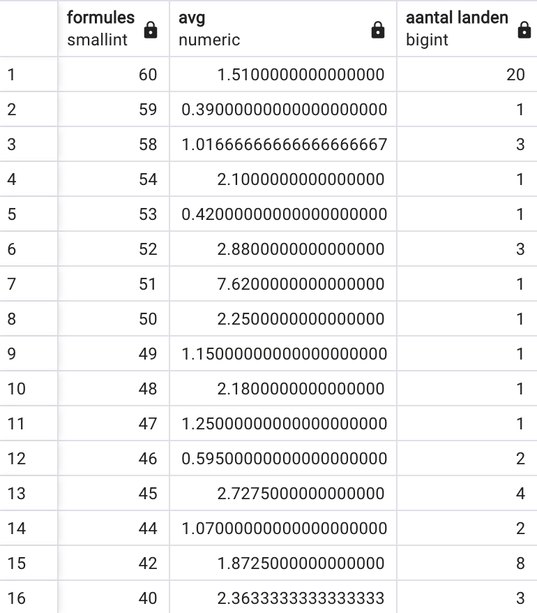
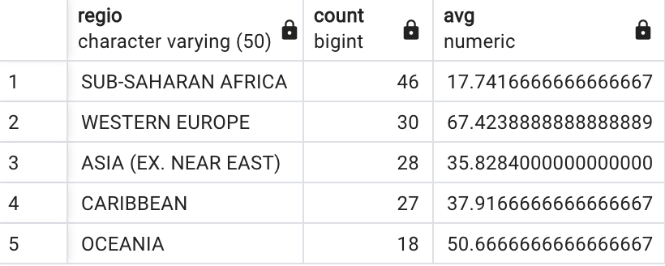

One of my most productive days was throwing away 1000 lines of code.
—Ken Thompson
Fetching information from a data file via SQL
Existing data sets
We saw in the previous chapter how to add your own data to a table via INSERT INTO. In the introductory example we took data of courses from the program
guide with the ECTS sheets of our Computer Science program. However,
sometimes those data have already been collected by other people and can
be found on websites. We then talk about datasets.
As an example, we take a dataset that provides some data related to
Internet usage by country. Check out on Kaggle the page https://www.kaggle.com/datasets/ ramjasmaurya/1-gb-internet-price. On this page, user 'Ram Jas Maurya' provides data on 'Internet Prices
around 200+ countries in 2022'. The data is made available in the Public Domain. (so no copyright). So you may use this dataset without any problem.
What we unfortunately do not find are sources. It should be
natural reflex to always look for sources. Where did the data collected by
this author in this dataset come from? We do a quick little check with a
number that we can easily look up. Belgium will have (according to
Wikipedia, source Statbel) on January 1, 2022 about 11.6 million
inhabitants. This dataset gives as the number of inhabitants the number
11.5 million. That's pretty close. Where the information about Internet
data fees for 1 GB of data was obtained, you don't know. In the comments
to this dataset on Kaggle, you read similar comments, by the way.
In this chapter, however, we want to emphasize
didactic use of a CSV dataset and then this can serve. As long as we do not
want to conclude from this any "absolute truths" ...
At the time of writing this piece (Aug. 14, 2022), there are four datasets
available. We are particularly interested in 'all_csv sorted.csv' (version
7 at the time of writing). This dataset combines the other three datasets
into one larger dataset with 200 rows and 13 columns. The file contains
data on the average, minimum and maximum price of 1 GB of data in 2022 and
the averages in the two previous years (if available). You will also find
the number of Internet users and residents in each country and the average
speed of a connection in Mbit/s. As already mentioned and yet important: we have no idea where the data comes from, so use this data with caution.
Possibly this dataset will then just open in your browser window.
Either you explicitly command the linked file to be downloaded , or
select the entire contents of your browser window (Win: CTRL + A, Mac:
CMD + A) and copy and paste this content into a new text file.
Save the file as "internetprices.csv."
CSV files
A CSV file ('Comma Separated Values') is an ordinary text file that
is useful to exchange data between different applications. For example, you
can export an Excel file in this format. Between each column value there is
then a separator (which you can often choose yourself) such as a comma, semicolon,
etc. Each row then starts on a new line. The just downloaded file looks like
this:
S.NO,Country code,Country,Continental region,NO. OF Internet Plans,Average price of 1GB (USD),Cheapest 1GB for 30 days (USD),Most expensive 1GB (USD),Average price of 1GB (USD at the start of 2021),Average price of 1GB (USD â€" at start of 2020),Internet users,Population, "Avg
(Mbit/s)Ookla"
0,IL,Israel,NEAR EAST,27,0.05,0.02,20.95,0. 11,0.9,"6,788,737","8,381,516",28.01
1,KG,Kyrgyzstan,CIS (FORMER USSR),20,0.15,0.1,7.08,0.21,0.27,"2,309,235","6,304,030",16.3
2,FJ,Fiji,OCEANIA,18,0. 19,0.05,0.85,0.59,3.57,"452,479","883,483",25.99
3,IT,Italy,WESTERN EUROPE,29,0.27,0.09,3.54,0.43,1.73,"50,540,000","60,627,291",37.15
…
The first line of a CSV file usually contains some sort of column header, in this case:
a number (type of serial number),
two-letter country code,
name of the country,
region,
number of different internet formulas,
average price of 1GB,
cheapest price for the same,
most expensive price,
averages for both previous years,
number of internet users,
number of residents,
average data rate.
Since this is a text file, you can open, view and manipulate it with
an editor. You choose which editor you use for this, but in
this example we'll use Visual Studio Code ('VS Code'), an editor that you undoubtedly use in other courses (front-end)
as well. Proposal: install in VS Code the extension 'Edit CSV' created
by a certain janisdd. This extension allows you to work in a spreadsheet-like
representation with rows and columns to view the data and manipulate it.
A second useful extension for CSV files is "Rainbow CSV". This gives
the different columns a different color and makes them thus better
distinguishable from each other. Also install this extension in VS
Code.
The two screenshots below show the original CSV file without and with
the extension "Rainbow CSV". The colored version is a lot more
readable, isn't it?

Attention: there is a small error because there is a enter between
'Avg' and '(Mbit/s)Ookla'. Be sure to remove that so that the full
header is only on the first row!
Once these extensions are installed, open the csv file and click Edit
csv in the upper right corner. You now get the following presentation
of the file:
Data cleaning
A dataset is rarely usable without modification.This dataset also
contains There are some annoying things in this dataset that make it
difficult to load load into a table.
Overbose columns
You can only load CSV data into a existing table. You have to
first create it. You already know that every table has a primary key
must have one: a field (or combination of fields) that is unique to each row.
The first column from this dataset contains an incremental integer (we'll this
later a 'technical key'). This could certainly serve, but let's look further.
The second column contains a country code consisting of two letters.
That country code is guaranteed to be unique if it the standard follows. Actually, it is then a
better idea to use this second column as the primary key for our table
.
The first column then actually contains useless information. It is best
removed from the file. The extension 'Edit CSV' that you installed in VS
Code makes this easy. If you have not done it before, just click 'edit
csv' in the top right corner. You then get a column view of the file.
Hover over the header 'column 1'. A trash can icon will appear. Click it
to delete this column. Delete.
The most commonly used character encoding is UTF-8. That is the standard
encoding of your browser, of VS Code, ... Also in a database server, you
can choose your character encoding. Let's agree that we will choose UTF-8
for everything. There are some country names that contain special
characters such as é, ô etc. Let's modify those manually. If you have
trouble finding those characters on your keyboard, you can always copy
them from a file that does have those characters correctly. Or you can
take the convenience solution and leave out all the accents, but I think
that's not correct.
Adjust the following (unless, of course, they are correct with you are
correct):
row 35: Reunion
row 125: Saint Barthélemy (St. Barts)
row 131: Côte d'Ivoire
row 139: a difficult ... Swedish capital Åland Islands (make
possibly just make a copy of this letter)
row 199: Curaçao
and finally the most difficult on row 229: São Tomé and Príncipe.
With that, this bit of the 'data cleaning' is in order. We can still
wonder if we need the first row. In principle we do not, but it contains useful
info that is needed to define the table later. Moreover, we can indicate later
during import that the first row should not be be imported.
To be on the safe side, save these changes to VS. Code: 'Apply changes
to file and save' (see screenshot below).
Missing info
From row 233 ("Christmas Island"), there is a lot of missing
information: either there are no providers, or the currency in which
costs are expressed is so unstable that it cannot be converted into
dollars. Let's remove all these rows (i.e., from 'Christmas Island' to
'Zimbabwe') remove them from this example. You can do that in the
column version, but actually it's simpler in the text version
because in the column layout you have to do it row by row.
Go over everything again. Here and there the description 'NO PACKAGES'
stands out. These are often tiny countries. Let us remove rows from
the dataset as well. More specifically the following five countries
(rows) may be removed: 'Cook Islands', 'Vanuatu', 'Tuvalu', 'Cuba'
(bit of a shame because this is a big country after all) and 'Cocos
(Keeling) Islands'. Now delete these rows (best in the text version,
do a search for 'PACK') and save the file one last time. time.
Different number notation
Notice that the large numbers representing residents and users use the US
notation: thousands are separated by a comma while the separator between
unit and decimals here is the period and not the comma. That period,
that's not a problem, but the
comma between numbers is going to be a problem when importing the data
. We just want the numbers and no separator for thousands, millions,
etc.
This is complicated by the fact that we cannot simply omit all commas
omit, because that comma is just the separator between the different
columns. And I must honestly admit that in preparing this teaching text, I
spent quite a bit of time fiddling with Excel. That was my first plan:
import this data into Excel, edit it there and then export it back as a
CSV. Sounds very simple, but it was rather disappointing.
The best thing you can do if it doesn't work is to take a walk ...
When I came back I suddenly saw that it really can be quite simple
in VS Code itself
. The impetus for a solution is in one of the previous paragraphs.
Now run the following:
The separator between columns is the comma. A CSV file can use other
characters as separators, however. We can we set through the VS Code
extension. So again, choose 'Edit csv'. At the top of the window you
have 'Write options'. In the write options, choose as the separator
('Delimiter') the semicolon ;'). Apply Apply and save via the 'Apply
changes to file and save' button. Close Both .csv files (the original
and the 'edit CSV') in VS Code and open the original .csv file again
to view the modification. The CSV file now uses the ; between two
columns:
Country code;Country;Continental region;NO. OF Internet Plans;Average price of 1GB (USD);Cheapest 1GB for 30 days (USD);Most expensive 1GB (USD);Average price of 1GB (USD at the start of 2021);Average price of 1GB (USD at start of 2020);Internet users;Population; "Avg (Mbit/s)Alsola"） Israel;NEAR EAST;27;0. 05;0.02;20.95;0.11;0.9;6,788,737;8,381,516;"28.01"
KG;Kyrgyzstan;CIS (FORMER USSR);20;0.15;0.1;7.08;0.21;0. 27;2,309,235;6,304,030;"16.3"
FJ;Fiji;OCEANIA;18;0.19;0.05;0.85;0.59;3.57;452,479;883,483;"25.99"
…
The only commas left now are those between thousands, millions, etc. So
those can be used without problem with a search/replace command in
VS Code (see figure below).

In the search field enter the comma, leave the replace field empty (i.e.
no space). The buttons on the right hand side allow you to substitute
one by one or all at once. In the text itself you can see all commas
that will be removed. That looks good, so just do all at once. If it goes wrong, don't panic: Undo!
The double quotes ("...") around some numbers should also be removed.
After all, we want to read this data into the database as a number because
we want to calculate with it. So they should not be strings to read in.
Remove all double quotes with a search/replace command in VS Code via
Edit > Replace.
After removing these two characters, the end result looks like this:
Country code;Country;Continental region;NO. OF Internet Plans;Average price of 1GB (USD);Cheapest 1GB for 30 days (USD);Most expensive 1GB (USD);Average price of 1GB (USD at the start of 2021);Average price of 1GB (USD at the start of 2020);Internet users;Population;Avg (Mbit/s)AlsolaNIL;Israel;NEAR EAST;27;0. 05;0.02;20.95;0.11;0.9;6788737;8381516;28.01
KG;Kyrgyzstan;CIS (FORMER USSR);20;0.15;0.1;7.08;0.21;0.27;2309235;6304030;16. 3
FJ;Fiji;OCEANIA;18;0.19;0.05;0.85;0.59;3.57;452479;883483;25.99
IT;Italy;WESTERN EUROPE;29;0.27;0.09;3.54;0.43;1.73;50540000;60627291;37.15
SD;Sudan;SUB-SAHARAN AFRICA;33;0.27;0.03;0.92;0. 63;0.68;12512639;41801533;9.5
RU;Russia;CIS (FORMER USSR);22;0.29;0.13;1.86;0.52;0.91;124000000;145734038;20.46
MD;Moldova;EASTERN EUROPE;18;0.32;0.07;2.79;1.12;2.82;3083783;4051944;29.46
…
The file is now ready to be imported into a table. So let's create that
table now.
Create schema and table via pgAdmin
In pgAdmin you already have in the database belonging to your class a
schema with as the name your student number 'rxxxxxxxx'. In this schema
there will now be a new table 'internet prices' (you can create as many
tables in your schema as you want). Let's go through all the columns:
The country code (column 1) is a two-character string, so char(2). It is required because it will be our primary key.
The name of the country (column 2) and the region (column
3) are indeterminate in length. So those will be varchar().
Choose for yourself the number of characters for both that is sufficient
to store all the names store (look for the longest string). Both are
mandatory.
The number of Internet formulas (column 4) is a small integer. The
data type smallint certainly suffices. Also a required field.
The next three columns are average price, minimum price and
maximum price for 1 GB of data. These are required fields that represent
a dollar amount. A suitable data type for this is numeric(5,2). In this, 5 is the total number of digits and 2 is the number of
digits after the decimal point (i.e., an amount rounded to 1 dollar
cent). All three values are indicated each time in the dataset.
Columns 8 and 9 are average prices of the two previous years.
There too, the choice of numeric(5,2) is fine. There is a small
problem if you look at the dataset. These numbers are not specified for specified
for each row.So here we are not going to add the requirement of NOT NULL. add. So these fields may well be left blank when importing of all the
data.
Columns 10 and 11 are the number of Internet users and the
number of residents
. So these are large integers so integer is an appropriate data
type. Check yourself if all rows have this info. If they do, then you
may require that these fields cannot be left blank.
Finally, the last column is another one that is not always known namely
the average data rate. Again, this could be a numeric(5,2) probably.
Now, as an exercise, create this new table with a CREATE
statement. Some typical errors that often recur:
Using column names with spaces: bad idea. In itself it can be done,
but then you should always enclose the name in double quotes
("..."). A better solution is to write words together or use a low
dash (underscore).
Do not define a primary key.
CREATE SCHEMA u0012047; -- presumably no longer needed because your schema already exists (previous lesson)
SET search_path to u0012047; -- because otherwise you're working in public! CREATE TABLE internet prices (n country code char(2) NOT NULL,n name varchar(60) NOT NULL,n region varchar(50) NOT NULL,n number smallint NOT NULL,n average_price numeric(5,2) NOT NULL,n min_price numeric(5,2) NOT NULL, Òn max_price numeric(5,2) NOT NULL,Òn gem_21_price numeric(5,2),Òn gem_20_price numeric(5,2),Ó internet users integer,Òpopulation integer,Ó speed numeric(5,2),Ó CONSTRAINT pk_internetprices PRIMARY KEY ( country code )Òn);
CSV import via pgAdmin
CSV is often used to exchange data between applications. It is
therefore obvious that a PostgreSQL database server can work with CSV
files to work with. The client we are using (pgAdmin) allows to perform
perform this operation easily.
About that "simple" perhaps tell us something more ... You will be able to
do this when you importing a CSV file into a table you will almost
certainly run into some errors. Sometimes a column definition is not quite
compatible with the data or the CSV file still contains small errors, etc.
We hope that the cleanup operation we did above will be sufficient to make
the importing succeed.
False hope, as we will soon see ...
That import is done in pgAdmin as follows. Right click on the name of
the newly the newly created table and choose 'Import/Export Data... '.
In the dialog box (tab 'General') you now set the following:

Import/Export: select Import;
Filename: go to the .csv file you want to import
('internetprices.csv');
Format: csv;
Encoding: UTF8;
In the second 'Options' tab (figure below), adjust the following:

Header: checkbox (so that the first row is skipped);
Delimiter: choose ';' as separator;
You don't need to change the rest of the options.
Confirm with OK. If all goes well, all the rows of the CSV file are
now read into rows of the table.
But as mentioned ... things rarely go quite right from the first time.
We thought our "data cleaning" was successful, but you still get an
error message. To see this error message, you must first go into the
red box where there is an error message, click on 'View Processes'.
You will then get a table with a line of information about the just
failed import process. In that line, just before the 'PID' column
there is a 'View Details' icon. Click it to see the correct error. You
may need to enlarge the window to read the full error message read.
Such an error message will look like this:
Apparently, the country code AW (our primary key!) appears twice
around line 176 of the CSV file.
Since the primary key must be unique, the database server rightly
gives an error message and the import is aborted.
Therefore, nothing is imported.
So there is twice a country with country code AW and the same name
Aruba. A quick visit to Wikipedia reveals that Aruba has just over 100
000 inhabitants. That number corresponds to the second line. The first
line presumably corresponds to the Netherlands, as it has about 17
million inhabitants. Maybe go into the CSV file anyway look at the
Netherlands? We find through a search in US Code the following:
So this line is missing the number of Internet users, the number of
population and the average speed. We warned in advance about the lack of clear source citation for this dataset. Now it also appears that there are errors
in the file. Presumably the error is best corrected by including the data
from the first entry of AW, Aruba ... moving to the line about the Netherlands
and then removing that first line from Aruba from the file.
This error is simple to correct: delete either line in VS Code. Don't
forget to save your file afterwards!
New attempt. Fortunately, this time we get the message that the import
was successful via a green window with 'Process completed'.
That requires a complete overview with SELECT * FROM prices:
From data to information
We have put the data (a collection of facts) into a table. Now we
can use SQL to structure this data, combine it, organize it differently, etc.
We talk about converting data to information.
By way of example, we are looking for an answer to the question of how
Belgium compares to other countries in terms of cost (in 2022) of 1 GB of
data on the Internet. This can be done with the following simple query:
SELECT name, mean_price
FROM internet prices
ORDER BY 2 --so from cheap to expensive
Test this and subsequent queries yourself!
Belgium is only ranked 186 according to this data. Our Internet
connections are thus expensive!
So where do we stand compared to our neighbors in Western Europe? There
too we are not doing so well, as only three countries (Norway, Andorra and
Greece) are even more expensive than us, as the following query shows:
SELECT name, region, average_price FROM internet prices ='WESTERN EUROPE' By 3
Exercises on this dataset
.
The best way to learn about a dataset is to play with it. Test different
queries. Try to solve the following exercises.
Ranking based on Internet speed
Create a ranking of all countries based on Internet speed. The country
with the fastest connection should be at the top. Display only the
columns with the country name and speed. In a second version of this
query show only those countries for which a speed is given.
A first version of the query could be this:
SELECT name, speed FROM internet prices BY speed DESC
You'll notice something special in the output: all rows containing NULL contain in the speed column are shown first. This is because PostgreSQL
NULL values are considered larger than all non-NULL values. This behavior depends on the database: Oracle does it just the
same way, but SQLite and MySQL do it just the other way around. Those database
servers consider
NULL as a value smaller than all other values.
To display only those rows for which there is effectively a rate
given, you filter for the value NOT NULL:
SELECT name, speed FROM internet prices WHERE speed IS NOT NULL BY speed DESC
Country with most expensive average price
Which country has the most expensive average price for 1 GB of data?
SELECT *n FROM internet prices by gem_price desc
Biggest price difference
In a SELECT, you can also count with columns. We
will make use of this in this exercise.
In which country is the price difference between the most expensive
and the cheapest offer the greatest? (Answer: Greece, where the
difference is so large that you have to wonder if these figures are
correct ...). You should obtain the screenshot of the figure below.
SELECT name, max_price - min_price AS price difference, max_price, min_priceFROM internet prices BY 2 desc
Country in the Americas with fastest internet
Which country on the American continent (both North and South America)
has the fastest internet speed. Create an SQL query that will generate a
list where you can read the answer.
This is already an extended combination of AND and OR. Don't worry if you still find this difficult, we will come back to
this in the next chapter.
SELECT name, speed, region FROM internet prices WHERE (region = 'SOUTH AMERICA' OR region = 'NORTHERN AMERICA') AND speed is not null BY speed desc
Percentage of Internet users
This is a difficult exercise!
Calculate the percentage of Internet users of each country and rank so
that the country with the largest percentage is at the top. In case case
you thought until now "surely everyone in our country has Internet
access": Belgium has a percentage of 87% ... Below in the solution some
tips, but try the exercise first without the tips!
A percentage is the number divided by the total number multiplied by
100.
There is a problem with the division of two integers. Try the
following code:
SELECT 1 / 2
This division produces a surprising result: 0. The reason is that
this is a whole division. The number 2 effectively goes 0
times into 1. Try a few other number combinations until you understand
how such integer division works. If you still want to come out a comma
number you should you must use the CAST ... AS ... operator.
Type next SELECT:
SELECT cast(1 AS float) / cast(2 AS float)
This SELECT calculates the division of two comma numbers.
The result is now also a comma number.
We don't want NULL values in the output
Make use of an alias (with AS) in the SELECT
This code is then a good solution:
SELECT name, cast(internet users as float) / cast(inhabitants as float) * 100 AS percentageFROM internet prices WHERE internet users / inhabitants is not null BY 2 desc
Grouping data with GROUP BY
Now that we have a large enough data set, we can group data in a
meaningfully group data (using a technical term "aggregate"), e.g., by
region. We introduce the GROUP BY for this purpose, by way of
introduction. A thorough treatment follows in the chapter 'GROUP BY / HAVING'.
Order in which a query is executed
By now you can already create simple queries. Those queries are completed
by a database server in this order:
FROM: which table(s) do we need and should be loaded into
memory to be loaded?
WHERE: which rows of these tables do we select?
SELECT: which columns do you display for the result?
ORDER BY: according to which column(s) are the rows finally
ordered?
So that's different from the order in which you write those parts!
Grouping data
Sometimes you no longer want to retrieve individual details, but are only
interested in information about a particular group. Some examples
for the table of Internet prices:
What is the average Internet speed, minimum price and number of
countries in each region (see figure)?

List the number of countries by the same number of Internet formulas
(from at least 40 Internet formulas) and the average price:

By way of example, we solve the question from the first example: "For each
region, list the number of countries in that region, the average Internet
speed and the minimum price.". You read here explicitly the word "by" and
so we have to group data, in this case: by region so GROUP BY region. At this point you can only retrieve the region itself and summary numbers (apply aggregation functions to certain columns). This gives the following query:
SELECT region, AVG(speed), MIN(average_price), COUNT(*)}price, COUNT(*)}GROUP BY region BY 2 DESC
Let's go through the execution of this query step by step in the correct
order order (i.e., not the order in which the query is written!):
FROM prices: the entire table prices is loaded into the
memory.
There is no WHERE, so no row is dropped.
Next comes the GROUP BY region: all rows with the same
region end up in one box. On each box, the name of region will appear.
So there will be as many boxes as there are different regions exist in
the table.
Only now is the SELECT executed. The only thing we can now retrieve
is the label of each box (region) and summary information of all the data
contained in each box using aggregation functions such as
AVG(velocity) (arithmetic average of all velocities in each
box),
MIN(mean_price) (the minimum value of the average prices in
each box) and COUNT(*) (the number of rows in each box).
Finally, the rows in the final result are ordered (ORDER BY 2 DESC) from large to small according to the second column so that the row
with the largest average speed is at the top.
Classical error with a GROUP BY
Take a look at the following simple query. This query is not going to
be executed be executed because it contains errors. What is wrong with
it?
SELECT * FROM prices by region
Read carefully the error message you get. It will make clear what what
is going on:
ERROR: column "prices.countrycode" must appear in the GROUP BY clause or be used in an aggregate function {SQL 2: select *country code}.
Using the GROUP BY, all rows with the same value for the
field region into one box. From this box you can only add the name
('region') and averages, maxima, minima, number and sum
(the five aggregation functions)
of some columns. With SELECT * you query allcolumns, which cannot be done. It immediately goes wrong with the first
column ('country code'), hence the message that this column must be in
the GROUP BY.
HAVING
In a query with GROUP BY, you will also regularly find a HAVING. This is somewhat similar to a WHERE in that it also makes a
selection and possibly causes data to drop out. Consider the following example:
SELECT region, COUNT(*), AVG(speed), AVG(velocity)} Prices GROUP BY region BY 2 DESC
This query lists by region the number of countries in that region and the
average Internet speed in that region. The following figure shows the full
results, arranged descending by the second column:
We now add a HAVING in the code:
SELECT region, COUNT(*), AVG(speed)}FROM pricesGROUP BY region HAVING COUNT(*) > 16 --new addition, must always be after GROUP BY GROUP BYORDER BY 2 DESC
The addition of HAVING COUNT(*) > 16 means "keep only those
boxes (regions) that contain more than 16 individual rows'. The result of the
query now consists of far fewer rows:

So what is the biggest difference from WHERE? The WHERE is executed right after the FROM and before the GROUP BY comes into play. The condition behind WHERE selects certain
rows of the table (and discards the others). Only then are these rows collected
into boxes collected by GROUP BY. Only when every row is in a
box, the HAVING is started which keeps certain boxes and removes
others.
The various statements in a query are executed in this order executed:
FROM: which tables contain the info?
WHERE: which rows satisfy the condition? Retain only
those rows.